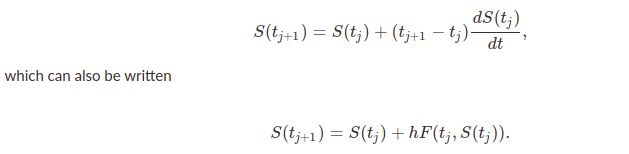

Let dS(t)dt=F(t,S(t)) be an explicitly defined first order ODE. That is, F is a function that returns the derivative, or change, of a state given a time and state value. Also, let t be a numerical grid of the interval [t0,tf] with spacing h. Without loss of generality, we assume that t0=0, and that tf=N * h for some positive integer, N.
The linear approximation of S(t) around tj at t(j+1) is

This formula is called the Explicit Euler Formula, and it allows us to compute an approximation for the state at S(tj+1) given the state at S(tj). Starting from a given initial value of S0=S(t0), we can use this formula to integrate the states up to S(tf); these S(t) values are then an approximation for the solution of the differential equation.
The Explicit Euler formula is the simplest and most intuitive method for solving initial value problems. At any state (tj,S(tj)) it uses F at that state to “point” toward the next state and then moves in that direction a distance of h. Although there are more sophisticated and accurate methods for solving these problems, they all have the same fundamental structure. As such, we enumerate explicitly the steps for solving an initial value problem using the Explicit Euler formula.